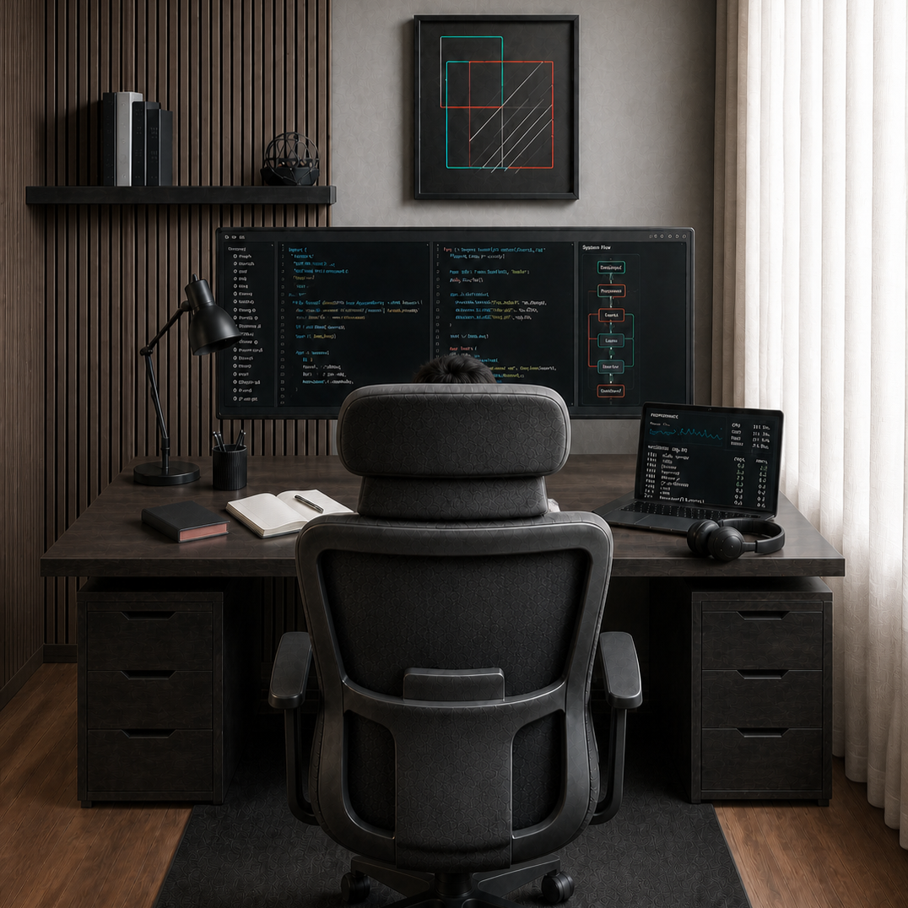

▤
Visual Response RAG
Proposed and led two generations of document-chat systems combining written answers with relevant source visuals.
Applied AI engineer working across computer vision, generative AI, multimodal RAG, product engineering, and cloud deployment.

Move across the cards to see the local spotlight and icon response. The cards enter with a short, restrained stagger.
Proposed and led two generations of document-chat systems combining written answers with relevant source visuals.
Optimized a 360-degree image-processing pipeline in about one week, making it run more than three times faster.
Focused on model development and evaluation for constrained floorplan generation and deployment.
Led the Bangladesh engineering team across backend and React interface development for the full model workflow.
Hover an experience card to connect it visually with its timeline node.
Applied research, product engineering, infrastructure, and technical-development leadership.
Computer-vision products for live video monitoring and full-stack product delivery.